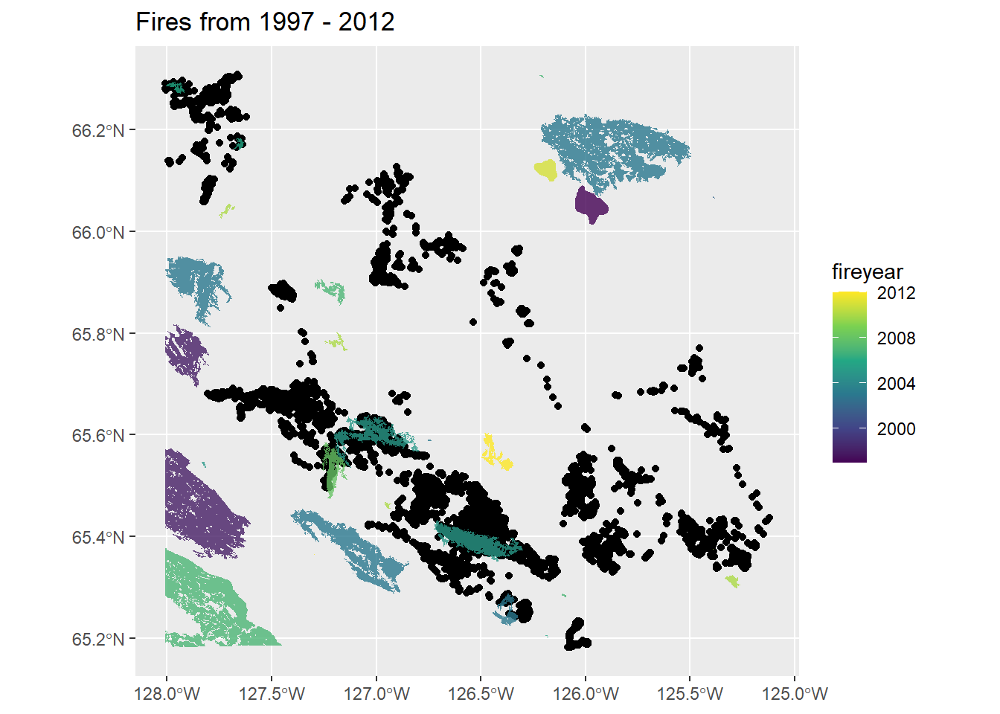
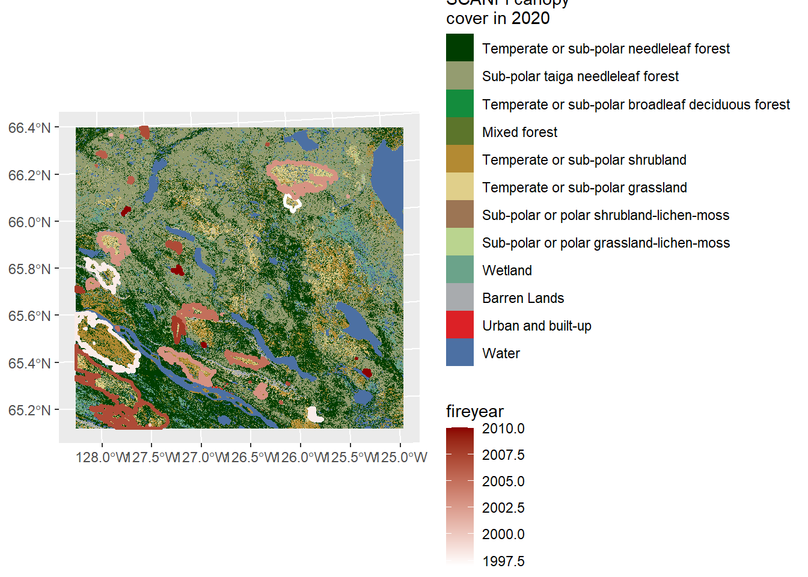

In this document, we will use integrated step selection analysis (iSSA) to model movement decisions of the Sahtu muskoxen. Models will be fit using the amt package. We’ll start by loading the data and required packages:
### group data by ID and seasonmusk_collar_season <- musk_collar_filt %>%left_join(snowdepth_locs) %>%group_by(year, Id_Number) %>%mutate(season =season_delineation(datetime, snow_depth, 0.1),year_min =minimum_year_season(year,datetime,season)) %>%mutate(id_season =str_c(Id_Number,"_",season)) %>%ungroup()
Joining with `by = join_by(Id_Number, Latitude, Longitude, datetime)`
Next let’s look at some of the relationships between the spatial data we’ll be using in the models. First let’s look at historical fire data and how it relates to forest cover data:
Warning: attribute variables are assumed to be spatially constant throughout
all geometries


The first image shows that muskoxen appear to favour areas impacted by recent fires to some degree. The second image shows that canopy cover is also impacted by recent fires, although the relative recency of the fire doesn’t seem to have a large effect on differences in canopy cover across areas impacted by fires. In any case, it will be important to account for changes in canopy cover that have occurred since the collars stopped recording as these areas likely had higher canopy cover during the monitoring period.
There does seem to be avoidance of some areas with high TRI values, however muskox do appear to cross ridge tops to get to potential foraging areas on the other side. Lastly, let’s look at the proximity to water and how it relates to muskox movements.
Lets prepare the data for use in ISSA. We’ll first resample the data to ensure each step is 8 hours in length. Next we will convert groups of steps into bursts, where a new burst occurs when the time between subsequent steps is greater than 8 hours. Lastly, we will sample random steps for each observed step so that we can compare available and used locations. We use the recommended sample size of 10 for available steps, but will test the robustness of these models by increasing the sample size once we have an appropriate model.
### create bursts whenever time between steps exceeds 8 hours and### transform locations into stepsissa_bursts_summer <- issa_track_nest %>%filter(season =="summer") %>%mutate(data_resamp =map(data, function(x) x %>%track_resample(rate =hours(8), tolerance =hours(1)) ),steps =map2(data,data_resamp, function(x,y)if(length(unique(y$burst_))==1) x %>%steps()else y %>%steps_by_burst() ),rand_steps =map(steps, function(x){set.seed(5) x %>%random_steps(n_control =10) }) )
Steps with length 0 are present. This will lead to an error when fitting a gamma distribution. 0 step lengths are replaced with the smallest non zero step length, which is: 4.65048575650619
Steps with length 0 are present. This will lead to an error when fitting a gamma distribution. 0 step lengths are replaced with the smallest non zero step length, which is: 11.1469734290516
Steps with length 0 are present. This will lead to an error when fitting a gamma distribution. 0 step lengths are replaced with the smallest non zero step length, which is: 4.63285409049334
Steps with length 0 are present. This will lead to an error when fitting a gamma distribution. 0 step lengths are replaced with the smallest non zero step length, which is: 4.62937688498926
Steps with length 0 are present. This will lead to an error when fitting a gamma distribution. 0 step lengths are replaced with the smallest non zero step length, which is: 4.6291379706363
Warning: There were 71 warnings in `mutate()`.
The first warning was:
ℹ In argument: `rand_steps = map(...)`.
Caused by warning in `random_steps.bursted_steps_xyt()`:
! Some bursts contain < 3 steps and will be removed
ℹ Run `dplyr::last_dplyr_warnings()` to see the 70 remaining warnings.
issa_bursts_winter <- issa_track_nest %>%filter(season =="winter") %>%mutate(data_resamp =map(data, function(x) x %>%track_resample(rate =hours(8), tolerance =hours(1)) ),steps =map2(data,data_resamp, function(x,y)if(length(unique(y$burst_))==1) x %>%steps()else y %>%steps_by_burst() ),rand_steps =map(steps, function(x){set.seed(5) x %>%random_steps(n_control =10) }) )
Steps with length 0 are present. This will lead to an error when fitting a gamma distribution. 0 step lengths are replaced with the smallest non zero step length, which is: 4.49071435198262
Steps with length 0 are present. This will lead to an error when fitting a gamma distribution. 0 step lengths are replaced with the smallest non zero step length, which is: 4.64930971137248
Steps with length 0 are present. This will lead to an error when fitting a gamma distribution. 0 step lengths are replaced with the smallest non zero step length, which is: 4.56724394081064
Steps with length 0 are present. This will lead to an error when fitting a gamma distribution. 0 step lengths are replaced with the smallest non zero step length, which is: 4.68349626346525
Steps with length 0 are present. This will lead to an error when fitting a gamma distribution. 0 step lengths are replaced with the smallest non zero step length, which is: 4.68332538915642
Steps with length 0 are present. This will lead to an error when fitting a gamma distribution. 0 step lengths are replaced with the smallest non zero step length, which is: 4.62894092545827
Steps with length 0 are present. This will lead to an error when fitting a gamma distribution. 0 step lengths are replaced with the smallest non zero step length, which is: 4.59543328749614
Steps with length 0 are present. This will lead to an error when fitting a gamma distribution. 0 step lengths are replaced with the smallest non zero step length, which is: 4.5434871594889
Steps with length 0 are present. This will lead to an error when fitting a gamma distribution. 0 step lengths are replaced with the smallest non zero step length, which is: 4.62843390838056
Steps with length 0 are present. This will lead to an error when fitting a gamma distribution. 0 step lengths are replaced with the smallest non zero step length, which is: 4.62677351093146
Warning: There were 68 warnings in `mutate()`.
The first warning was:
ℹ In argument: `rand_steps = map(...)`.
Caused by warning in `random_steps.bursted_steps_xyt()`:
! Some bursts contain < 3 steps and will be removed
ℹ Run `dplyr::last_dplyr_warnings()` to see the 67 remaining warnings.
Next we will collapse each muskox-specific dataset into a combined dataset for each season. We will assign a new ID to each muskox burst and calculate some new covariates for the models. We will also examine the covariates for any correlation.
Lastly, we will fit models for the summer and winter datasets separately. Models are fit using the ISSA method that allows for random effects. This way we can automatically pool estimates across individuals to come up with a population-level estimate for each covariate.